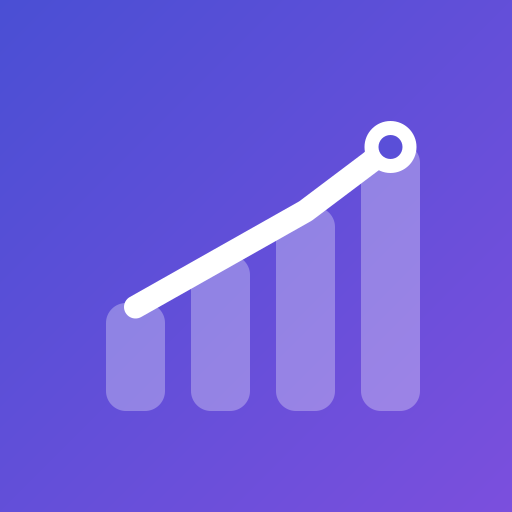

YKS · KPSS · LGS çalışma takibi
Netim, sınava hazırlanırken “ne kadar çalıştım, nerede eksiğim var?” sorusunu net biçimde cevaplayan bir çalışma takip uygulamasıdır. YKS (TYT-AYT), KPSS ve LGS müfredatı hazır gelir; hiçbir şey kurmadan ilk günden kullanmaya başlarsın.
Tüm verilerin cihazında saklanır. Hesap açman gerekmez; ad, e-posta veya telefon numarası istemiyoruz. Ayrıntılar için gizlilik politikası.
Sorun, öneri veya eksik gördüğün bir konu başlığı için yaz: pronethamza@gmail.com